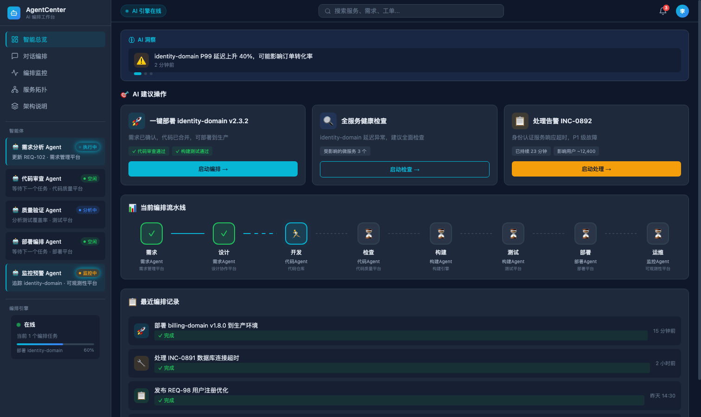

指挥式纯 AI 编码实践
AgentCenter 的开发过程形成了一条清晰路径：团队需要一个面向 AI DevOps 的 Agent 能力，我们用 Codex 在极短时间内生成高保真原型，让想法变成可感知的产品形态；随后用多栏工作台承载高信息密度场景，通过 SDD、强模型、检查工具和代码关系工具，把 AI 从“聊天辅助”推进为“可放手的工程执行单元”。
核心观点
AI 编码的关键不是 prompt 技巧，而是把人的产品判断、架构边界和验收标准组织成一套 Agent 能持续执行、检查、复盘、交接的工作协议。
组织方式
这不是展示某个项目有多复杂，而是展示一种新的编码组织方式：人负责方向、边界和判断，Agent 负责实现、验证和闭环。
为什么有信心直接采用指挥式纯 AI 编码
这不是一次突然押注，而是建立在前置实践、能力边界判断和质量闭环预案上的选择。真正的信心不是“相信 AI 不会出错”，而是知道它在哪个区间有效，以及出错后如何收敛。
已经验证过这种组织方式
在 AgentCenter 之前，已经用类似的 AI 指挥式编码方式做过几十万行级别的工程探索。高保真、原型、功能骨架、调试修复这些环节，已经有过可感知的效果验证。
知道它能做到哪里
强模型已经能覆盖大量功能明确、场景明确、验收明确的编码任务。关键不是无限相信模型，而是把任务放在它的可用区间里，并把模糊复杂任务先澄清、拆小、设验收。
质量问题可以继续被组织
代码质量问题不是被忽略，而是被拆成不同阶段的看护点：当场用检查和测试兜住，后续用代码关系工具、更多 Agent、复盘和重构持续收敛。
前置实践证明“能跑起来”，能力边界判断决定“怎么拆任务”，质量闭环预案保证“跑偏后能收回来”。这三件事合在一起，才构成采用指挥式纯 AI 编码的底气。
第一版高保真：先让想法被看见
这张图对应 2026-04-29 前后的第一版高保真页面。它体现了 AI 在早期阶段最大的价值：快速把抽象方向变成可感知、可讨论、可决策的产品形态。

从“AI DevOps Agent”到“工作台形态”
第一版高保真的意义不是功能完整，而是把团队讨论从抽象概念拉到同一张可见界面上：左侧 Agent 队列、中间 AI 洞察、建议操作、流水线和历史记录，已经把“工作台”气质打出来。
后续的多栏工作台、对话能力、任务看板、工作流节点和 Runtime Bridge，都是在这个视觉锚点之后逐步收敛出来的。
量化背景：2026-04-29 到 2026-05-14
先用一组可复查数字建立背景：这里按开发日期看，已扣除 2026-04-30 到 2026-05-03 的假期窗口。
统计口径：起点取 2026-04-29 的实际开发 commit `7707fab1`，终点取 2026-05-14 的 1026 节点 commit `6f2e0416`。代码量、文档量、测试量按 `6f2e0416` 的 tracked 文件统计；Codex 会话按日志中 `cwd=/Users/hzz/workspace/AgentCenter` 且处于 2026-04-29 到 2026-05-14 区间统计。
提交节奏：不是半个月连续堆代码
每日提交数把节奏讲清楚：前期主要是高保真、讨论和路线准备，密集工程实现集中在 5 月 7 日之后。
4.29
更接近高保真、资料整理和方向可视化，不是大规模工程编码。
4.30 - 5.3
假期窗口，0 提交，说明自然跨度不等于连续开发时间。
5.4 - 5.6
原型、SDD 和 Bridge 起步，开始把方向转成工程入口。
5.7 - 5.14
密集编码和收敛窗口，峰值在 5.11，单日 52 次提交。
功能面：10 个功能域，32 项可识别能力
这部分按功能域展开 1026 分支已经长出的能力面：前端工作台、Java Bridge、Runtime Adapter、文档和验证体系已经连成一个可运行系统。
9 个 Web 视图
首页、看板、对话工作台、工作流配置、Skill/MCP/Runtime/项目上下文设置等。
11 个 Bridge Controller
覆盖会话、事项、工作流、确认项、Artifact、Runtime 资源、事件流和项目数据。
10 个 Pinia Store
前端状态覆盖任务、会话、工作流、确认、runtime、资源、主题和通知。
23 个 DB Migration
从 M1 schema 到 workflow、runtime event、artifact、project context 等数据结构。
高信息密度工作台
多栏布局、折叠面板、主题系统。
会话与对话
会话列表、流式输出、工具调用渲染、错误展示。
任务看板
Work Item、状态投影、卡片视图。
工作流编排
节点配置、批量启动、重启历史、阶段投影、状态恢复。
确认与交互
确认卡片、多问题表单、自定义输入。
Runtime Bridge
OpenCode 对接、SSE 事件、REST 命令、进程生命周期。
Skill / MCP / 资源
Skill 管理、MCP 管理、资源审计。
项目上下文
Provider 切换、范围选择、scope sync。
Artifact
对话产物捕获、文件预览。
工程支撑
设置、通知。
实际效果：功能可用，验证加速
到 1026 节点，目标功能已经开发成可运行系统。它不是最终稳定版，仍有一些明显问题需要继续收敛；但已经足够支撑其他成员基于系统接入、测试和调整业务相关 Skill，快速验证最初的产品设想。
想要的能力已经长出来
对话、任务看板、工作流、Skill/MCP、Runtime Bridge、确认交互和设置等核心功能点已经形成可操作工作台，不再只是高保真或单点 demo。
其他成员可以基于系统试起来
业务相关 Skill 可以放到系统里做测试、调整和联调，团队不必停留在概念讨论，而是可以围绕真实操作结果判断方向。
问题进入后续看护
当前仍有明显问题和体验细节需要继续打磨，但这些问题已经可以被放进检查、复盘、重构和更多 Agent 的收敛流程里。
1. 功能开发出来
核心模块可以被点击、配置、运行和联动。
2. Skill 放进去测
业务相关 Skill 能进入真实系统环境验证。
3. 测试中调整
根据运行效果修正流程、提示、接口和体验。
4. 快速验证想法
把“方向是否可行”从讨论推进到可操作验证。
这轮实践最显著的价值，是把一个 AI DevOps Agent 的想法快速推进到可被多人试用、可接入业务 Skill、可暴露真实问题的系统状态。它还没有完全稳定，但已经能支撑快速落地和持续验证。
发展时间线：从产品形态到可运行系统
时间线呈现了从想法、原型、边界、路线试错、外部强模型快跑到反馈收敛的完整推进路径。
契机出现
团队出现面向 AI DevOps 的 Agent 能力需求，触发我们已有的 AgentCenter 资料积累。
5 分钟高保真
Codex 快速生成黑色背景高保真，让模糊想法变成可以被看见和讨论的产品形态。
正式高保真
基于高信息密度页面探索，选择多栏工作台布局承载任务、对话、流程、工具和协作。
边界收敛
第一版边界被逐步收敛：明确核心模块、暂缓愿景项，并确定工作流节点与对话能力的出现方式。
方向走偏
内部适配路线演进困难，方向和实现开始偏离，推进效率不足，促使我们重新判断执行路径。
7-8 小时成型
决定用外部强模型快速演进一版，连续编码搭起对话、看板、Skill、MCP、设置和工作流骨架。
进入收敛期
通过 SDD、code check、代码关系检索、复盘和重构，让系统从“跑起来”走向“稳下来”。
指挥式协作：人负责判断，Agent 负责执行闭环
关键差异在于：AI 不再只是逐句辅助写代码，而是被组织成一个可放手执行的工程系统。
愿景、边界、验收
人负责给出产品愿景、页面形态、信息架构、版本边界和验收方式，为 Agent 明确执行方向。
实现、调试、检查
Agent 负责查代码、写代码、跑检查、修问题、产出可运行系统，而不是停留在建议层。
截图、测试、复盘
截图、code check、测试、影响分析和复盘共同构成反馈闭环，用证据约束执行偏差并推动修正。
指挥式编码不是陪 AI 一句一句写代码，而是给出愿景、设计和验收，让 Agent 自己拆解、执行、检查、修复；人的角色更接近产品和架构负责人，在关键节点做判断和纠偏。
相比传统开发，改变了什么
指挥式纯 AI 编码不是把传统工程动作全部取消，而是重新分配了人和 Agent 的职责：人更集中在方向、边界和验收，Agent 承担大规模执行、检查和修复。
变化不是“AI 会不会写代码”，而是执行力发生变化后，人的角色从持续看护执行，转向设计目标、定义边界、组织反馈和判断结果。
传统代码问题，如何进入新闭环
类型错误、接口不一致、状态机跑偏、UI 重叠、测试失败和回归风险并没有消失。变化在于，这些问题不再只靠人长时间盯着，而是被组织成 Agent 可感知、可修复、可验证、可复盘的闭环。
通过 typecheck、test、build、运行日志、截图和人工验收，把问题从感觉变成证据。
用代码关系图、影响分析、rg、调用链和分层排查，减少 Agent 盲读文件和误读上下文。
把问题场景、边界、相关模块和验收方式交给 Agent，让它围绕目标完成修改。
重新跑检查、测试、构建、curl 或截图；失败就继续收敛，而不是用主观判断宣布完成。
把高频失败模式写回 SDD、计划、审查卡片和后续提示，让下一轮执行少踩同样的问题。
传统质量风险仍然存在
类型、接口、状态、并发、测试、UI、回归、上下文污染，这些问题在 AI 编码里仍然会出现，甚至因为生成速度更快而更容易暴露。
从人工盯守到工具反馈
让 Agent 带着检查工具和感知工具工作：代码关系工具告诉它影响面，测试和截图告诉它是否真的改对。
方向和验收不能外包
人仍然负责决定目标是否正确、边界是否合理、风险是否可接受，以及什么时候需要收紧任务粒度。
质量不是靠相信 AI，而是靠把 AI 放进可验证的工程闭环里：检查发现问题，影响分析定位问题，测试和截图证明问题被修掉。
SDD 不是重流程，而是让 AI 不跑偏的控制系统
这套 SDD 来自实践：吸收 Superpowers、OpenSpec、GSD、oh-my-opencode 等思路，再从真实报错和跑偏里反向沉淀规则。
PRD
明确做什么、不做什么、第一版成功标准。
HLD
明确模块之间怎么连，边界在哪里。
LLD
明确改哪些文件、接口、状态和组件。
Verification
明确如何证明做对：检查、测试、截图、证据。
模型能力阈值：不是所有模型都能撑住指挥式编码
这组判断来自两组实际使用对比：Codex + GPT-5.5 更接近可放手闭环，OpenCode + GLM-5 在长程复杂任务里更容易把人拉回陪跑和看护。信心的来源不是认为模型能覆盖所有任务，而是强模型已经能覆盖大量目标清楚、场景清楚的编码任务。
能力不足时：人被迫补位
- 上下文与步骤补充成本上升
- 过程盯防和纠偏成本上升
- 耗时增加但修改效果有限
- 甚至引入新的问题
能力足够时：Agent 可以闭环
- 能理解目标和场景
- 能自己检索相关代码
- 能按设计实现和调试
- 能在短周期内产出有效修改
工具体系：感知系统 + 反馈系统
模型是大脑，但工程 Agent 还需要眼睛、地图和仪表盘。否则它只能在有限上下文里逐文件摸索。
感知工具
例如 GitNexus、代码图谱、调用关系、影响分析。它们帮 Agent 快速知道当前问题和哪些代码真的相关。
反馈工具
例如 code check、typecheck、test、截图验证。它们把主观判断转化为可验证证据：不是“看起来改好了”，而是“检查证明有效”。
不破不立：生产力关系变了，流程也要重建
关键不是放弃工程质量，而是避免把旧流程原封不动搬到 AI 时代：先做减法，再按真实问题把必要环节加回来。
为什么要破
AI 提升的是执行力。就像从马车到汽车，变化不只是速度，而是道路、枢纽、城市和商业生态都会重新分布。执行力变了，协作方式和质量控制也要重新设计。
破的代价是什么
如果设计没做好，问题会反复出现；让 Agent 修，它可能修一个地方又破坏另一个地方。最后一两成的稳定性并不天然保证，需要新的收敛机制。
分享主线
整套叙事先校正时间感，再讲从原型、边界、路线试错到密集编码和实际验证的推进过程。
先讲为什么敢这么做
指挥式纯 AI 编码不是盲目放手。前置实践已经证明 AI 能在高保真、原型、功能骨架和调试修复上形成有效产出；同时，代码质量问题也可以通过检查工具、代码关系工具、更多 Agent 和复盘机制继续看护和收敛。
需求触发
团队需要一个 AI DevOps Agent 方向的能力；我们已有 AgentCenter 的参考资料和 Demo 积累；Codex 5 分钟生成黑色高保真，让团队快速看到这个方向的可行性。
产品形态先行
正式开始时，仍然从高保真和信息架构入手。因为这类系统信息密度高，所以选择多栏工作台，而不是普通聊天窗口。
先校正时间感
4.29 和 5.4-5.5 更偏高保真、原型和规则准备，中间 4.30-5.3 是假期窗口、0 提交。真正密集编码集中在 5.7-5.14，这 8 天贡献了 160/169 次提交，约 95%。
边界收敛后再执行
第一版范围先被收住：明确要做什么、不做什么、有哪些模块和流程节点；边界清楚后，才进入具体执行路径探索。
路线试错后切换执行路径
中间并不是一路顺滑。内部适配路线出现方向走偏和演进困难后，重新判断了执行路径，转而用外部强模型快速演进一版，把系统先拉到可运行状态。
功能落地后开始产生实际效果
核心功能点开发出来后，系统已经能支撑其他成员接入业务相关 Skill 做测试、调整和联调。它仍有明显问题需要继续收敛，但已经把最初设想推进到了可操作验证阶段。
执行方式从开发变成指挥
人的工作不再主要是逐行写代码，而是把产品判断、架构边界、任务拆分和验收标准讲清楚；Agent 承担查代码、改代码、跑检查和修问题。
SDD 来自失败复盘
真实报错、跑偏和上下文丢失推动了规则沉淀。SDD 的目的不是重流程，而是让 AI 不跑偏、能并行、能放手。
质量问题进入闭环
传统代码问题没有被绕过去，而是通过 code check、测试、截图、影响分析和复盘进入 Agent 的修复循环。核心不是相信 AI，而是让 AI 的每一轮执行都留下可验证证据。
模型能力决定协作模式
Codex + GPT-5.5 能在 10-30 分钟内形成有效闭环；OpenCode + GLM-5 不只是慢，还可能改不出效果甚至越改越错。指挥式编码需要跨过模型能力阈值，也需要把任务控制在“清楚、可拆、可验收”的区间里。
AI Native 开发需要重建工程规则
旧的默认流程先被压缩，让系统跑起来；再根据真实问题加回设计、检查、测试、代码图谱和复盘。AI Native 开发的关键，是用最少但必要的规则放大 Agent 的可用区间。
关键表达
以下判断概括了本次实践的核心经验：原型、SDD、质量闭环、模型能力和工具系统共同决定指挥式纯 AI 编码的上限。
采用指挥式纯 AI 编码不是因为相信 AI 不会犯错，而是因为前置实践证明它有可用区间，并且质量问题可以通过工具和更多 Agent 持续收敛。
AI 的价值不是等需求完全清楚后才写代码，它可以在非常早期把一个模糊想法变成可被看见、可被讨论、可推动决策的东西。
这套 SDD 不是学院派方法论，而是由社区实践和真实失败经验共同沉淀出的工作协议，使 AI 能持续执行、验证和交接。
质量不是靠相信 AI，而是靠把 AI 放进可验证的工程闭环里：检查发现问题，影响分析定位问题，测试和截图证明问题被修掉。
强模型让人进入指挥状态，是因为它已经覆盖大量清晰编码任务；弱模型或模糊复杂任务，会把人拉回陪跑和看护。
Agent 不是只靠模型就行，它也需要眼睛和仪表盘：代码关系工具帮它看清影响面，检查工具帮它知道自己有没有做对。